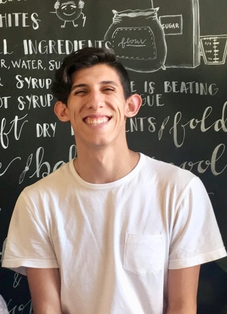

Blurp

Born in Los Angeles, California. Home of the Dodgers, Lakers, tacos, and sunshine. Despite being born in LA, growing up I moved alot do to my fathers work and other things... By the time I hit 8th grade, I attended 13 to 14 different schools. Each school within a different city and state. Despite these changes I consider myself a true LA kid.
I have 3 younger siblings who I consider my children. By the time I was 10, my parents were gone and I was left with three younger siblings at my grandparents house.
Practically raising them until I had to focus on my personal achievements, my siblings were (at times) still my everything. Side tracking from family; I went to school in Syracuse, NY. Graduated with a B.A. in Psychology, focusing on Interpersonal Relationships.
Now, I live in Center City, working in King Of Prussia! Forty minute commute, which isnt bad since I listen to music at a level that is considered "ear bursting". And that's pretty much it, I guess. In defining terms of personality I like pizza, music, movies and basketball.